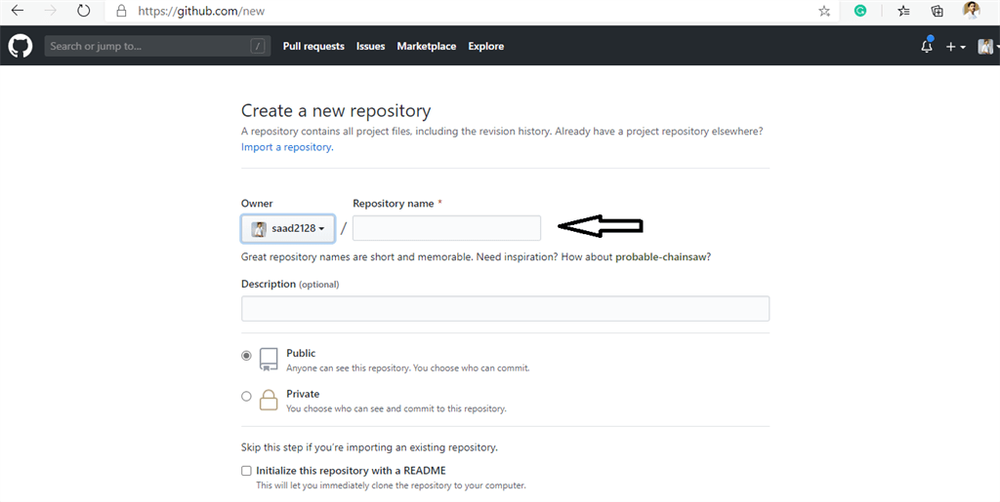
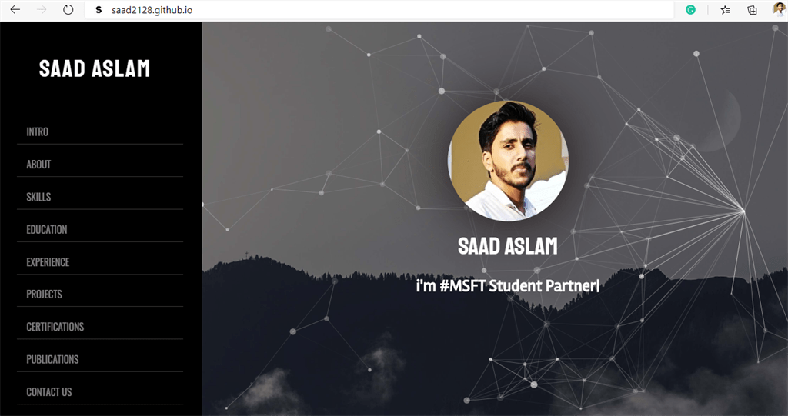
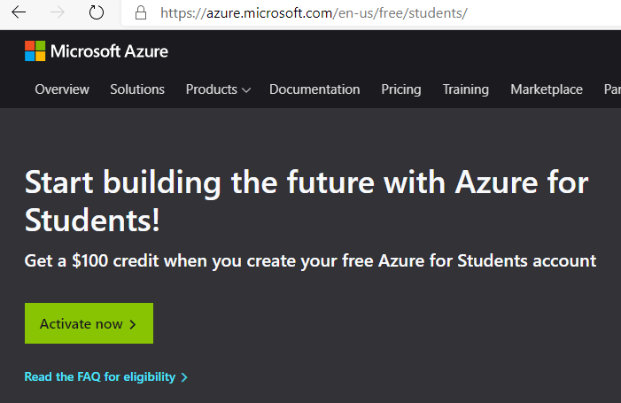
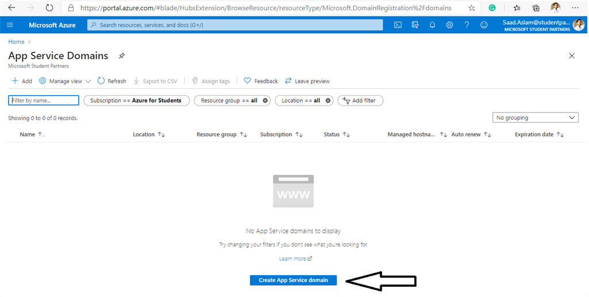
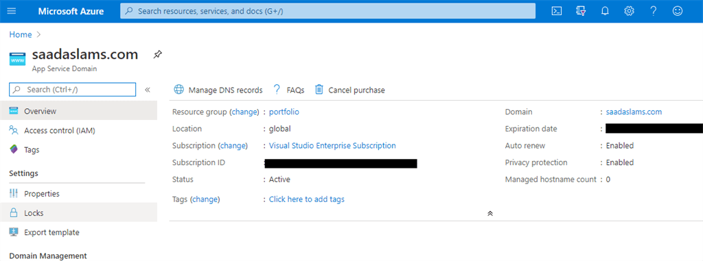
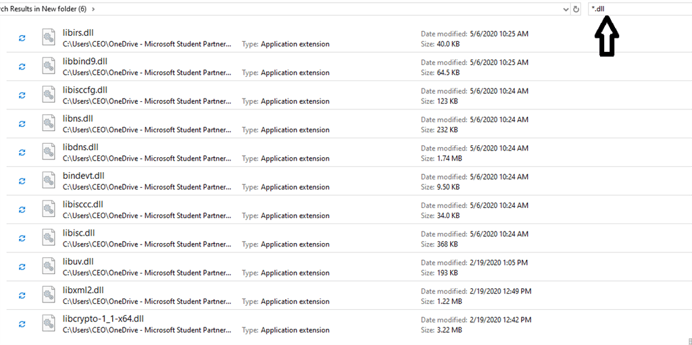
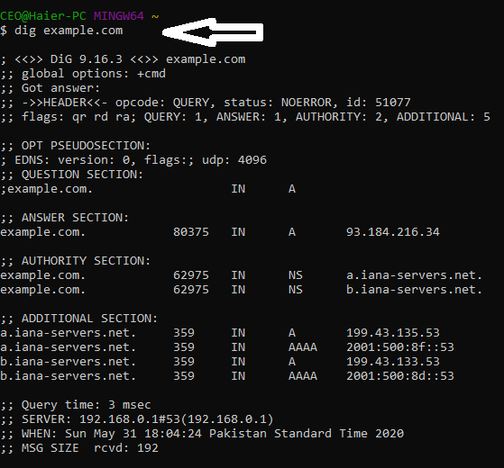
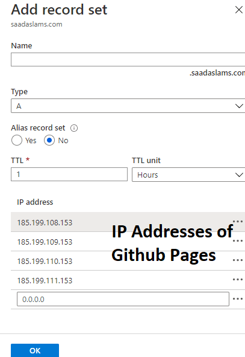
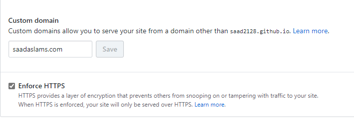
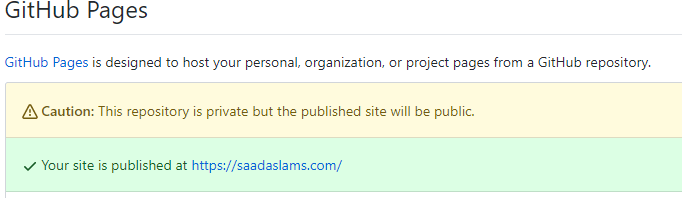

Configuring A Custom Domain Name For Your Github Pages Site Using Azure App Service Domains

Introduction
This article looks at how to configure the custom domain name for your Github Pages site using Azure service
-App Service Domains. App Service Domains allows you to purchase and manage a domain name within a few minutes.
We will look at simplified domain life cycle management and purchasing and managing domains for your Azure Services.
So grab a cup of coffee and follow along through this article up to the end, and you will be able to configure the
custom domain name for your very own Github Page site.
Will be covering the following topics:
- Step 1: How to set up a Github Page
- Step 2: How to purchase a Custom Domain name through Azure App Service Domains(don't worry will have something special for students)
- Step 3: How to install Dig for DNS Lookup.
- Step 4: Configuring the DNS record.
Step 1 - How to set up a Github Page
GitHub Pages are public webpages hosted and easily published through GitHub. The quickest way to get up and running
is by using the Jekyll Theme Chooser to load a pre-made theme. You can then modify your GitHub Pages’ content
and style remotely via the web or locally on your computer.

The very first thing that you need to do is to have a Github Page (Note: if you already have any website and wants
to configure a custom domain for that so then you can skip this step and can continue with Step 2 that is purchasing
a custom domain name through Azure App Service Domains).
We have to create a new Repository on our Github account through the link
https://github.com/new.

In the repository name, you have to type your own Github Username, like in my case its saad2128 but yours will be
different. You have to fill that repository name with username.github.io .Here, you will notice that the username
will be your Github username and .github.io will remain the same. I already have one, so I am not creating another
one and in my case, it's saad2128.github.io. After writing the repository name, you have created the repository.

After creating the repository, you will be able to see an empty repository where you can add your website code. It
can be your portfolio or anything you want to show something to the world. If you don't have any portfolio
or website available to host now then you can use any of the themes available on the Internet to follow along with
this article. (Note: Github Pages are suitable to host static websites or portfolios up to limited space, it's
not preferred to use it for E-Commerce websites or something like that).
Now you have to upload the files of your project. There are two options available; you can upload the files using
Git commands, or you can simply upload the files through the upload button available

After uploading the files, go to settings of the repository in the top right corner and scroll down to Github Pages.
Here, you will see a message displaying that your site is published at username.github.io (Note: I have already
configured custom domain name for my repository so it's showing my custom domain name but in your case, it
will show your username.github.io). You can copy that link username.github.io and paste it in your browser and you
can see that your website is live and hosted on Github.
Hurray!! you have got your Website live and being hosted on Github. But that's not the end. We have to give
our Website a cool custom domain name so that we can share it with our clients and recruiters so that I will give
a more professional look. Here's a screenshot of how your website will be hosted with username.github.io, it
is before configuring our custom domain name.

Step 2 - How to Purchase a Custom Domain Name through Azure App Service Domains
You have done a great job up to now and have successfully set up your Github Page! Now we have to buy a cool custom
domain name for your Github Page. For this, you have created an account on Microsoft Azure through the
link.

Microsoft has something special for students to help them out to use Azure for free and its called Azure for Students.
Students just have to use sign up an account using their University email and they will get $100 Azure Credits to
use Azure Services and learn the best from it. Students can get their free accounts through this
link.

Once you have logged in to your account, you will see an Azure Portal. In the search bar, look for App Service Domains.

After clicking on Create App Service Domain, you will see a dashboard to search for your custom domain and choose
your subscription (in the case of students, it will be Azure for students. In my case, I have used Visual Studio
Enterprise Subscription ). Go through your contact information, privacy protection, legal terms, and then click
on the Create button.

After clicking on create, it will take a couple of minutes for the deployment. Afterward, you can your custom domain
name details.

Hurray! You have purchased your very own custom domain name through Azure App Service Domain
 . Now we have completed step 2.
. Now we have completed step 2.
 . Now we have completed step 2.
. Now we have completed step 2.
Step 3 - How to Install Dig for DNS Lookup
The Domain Name System(DNS) is the phonebook of the internet. Web Browsers interact through Internet Protocol Addresses.DNS
translates domain names to IP addresses so browsers can load Internet resources. Each device connected on the Internet
has a unique IP address that other machines use to find the device.
Download the dig command tool for windows and perform advanced DNS queries using dig command on windows. The
dig command which comes as a part of Linux is very useful for performing DNS lookups on domain names and provides
detailed information like TTL and class type. It is now possible to use the dig command on windows also
First, go
here and look for the BIND, then click on the download button.

When you download and extract the files, search for .dll files and dig.exe in the folder and copy /paste all these
11 files in C:\Windows\System32

After that, open any command prompt. In my case, I am using Git Bash. type dig example.com.Here, example.com will
be your domain name.

Hurray!! you have figured it out how to install dig and how to perform DNS lookup.
Step 4 - Configuring the DNS record
The last step is to configure the DNS record of your custom domain so that your domain will be connected to the Github
Page you created at the very start of this Article. So again let's move to Azure Portal and click on the Manage
DNS Records. After clicking on it, you will DNS settings for your domain. After that, click on Record Set.

Search for a record set through the search bar given below. If you find www in the search then it will be your
subdomain otherwise it will be an apex domain. In my case, its an apex domain. Next, we have to create a record.
Point your apex domain to the IP addresses for GitHub Pages provided in the screenshot below or you can have it
from
here. After writing the IP addresses click OK Note that IP Addresses given in the screenshot will remain
the same. This will point your domain to Github but we still need to do some more configuration to point the domain
to your respective Github Page.

After that, once again go back to your Github account and go to the root folder of your repository you just created
at the start of this article and create a new file named CNAME. All alphabets are capitalized. In that file,
write the complete domain name of the configured DNS Settings.


The last step is to go to settings of your Github Repository and scroll down Github Pages section, where you have
to write your domain name in the custom domain section and save it and also click on Enforce HTTPS, which prevents
others from tampering with traffic to your site.

You can see that the Github Page shows a message that your domain has been hosted on your custom domain.

All done, you have successfully configured custom domain to your Github Page using Azure App Service Domains. Now
copy/paste your domain to the browser and here you go!


Conclusion
What’s next?
This article was meant to let you know how to configure a custom domain name to your Github Page using Azure App
Service Domains. Feel free to experiment along. Next time, we need to have more articles on Networking